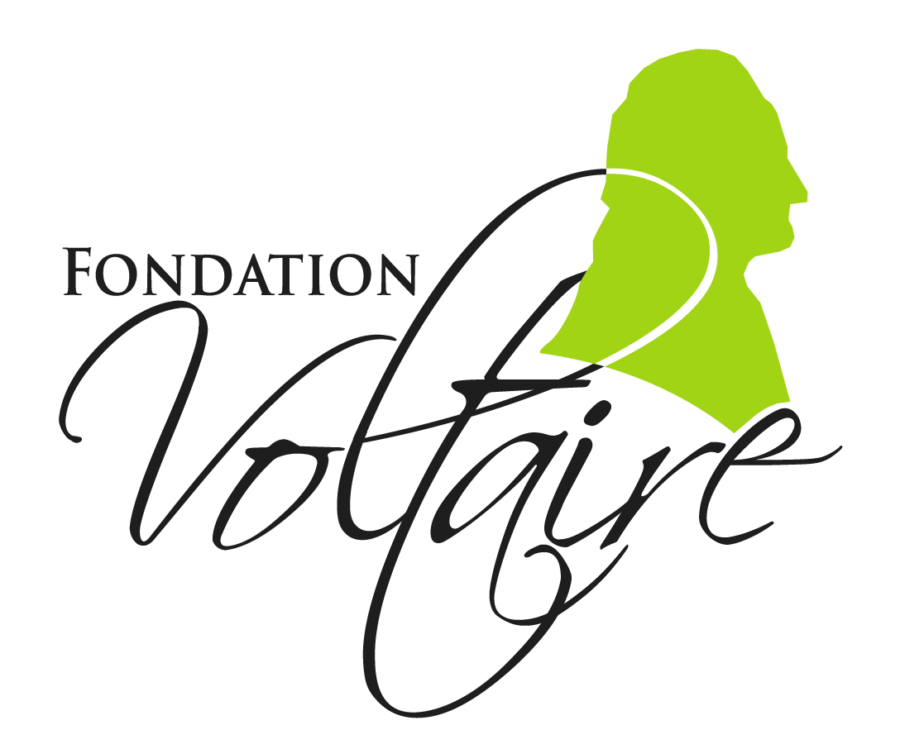
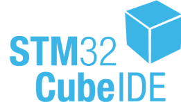
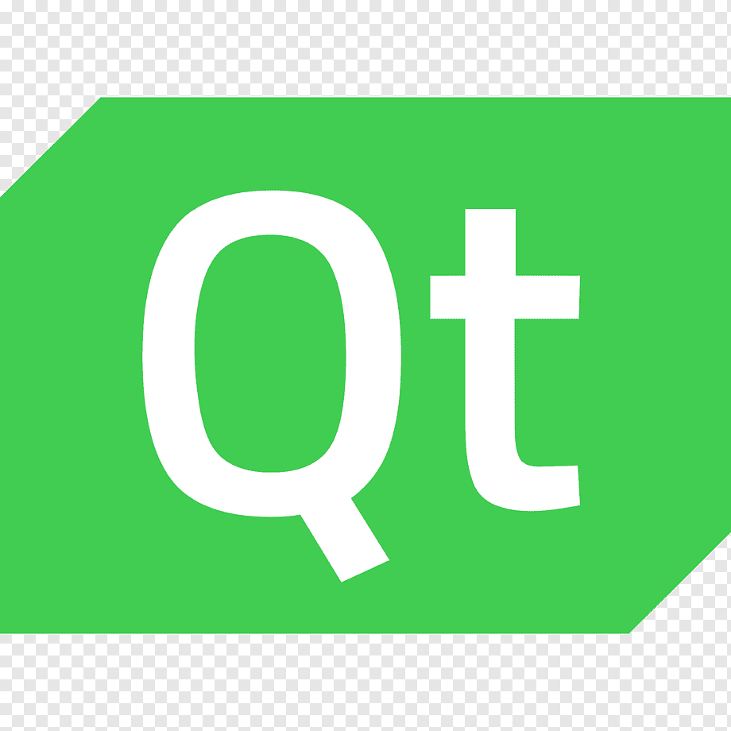

Qualifications
Je suis détenteur depuis juin 2023 du permis B, je pense aussi passer mon permis A2 dans l'année 2026.

Grâce à l'IUT de Montpellier-Sète, j'ai obtenu la certification du projet Voltaire avec un score de 569.
Logiciel de conception de circuits numériques utilisé en cours et en projet. Il m'a permis d'apprendre la programmation VHDL ainsi que la synthèse sur FPGA à des fins de prototypage et de simulation.
C'est un outil que j'utilise très régulièrement pour tout type de langages, il me permet aussi de simplifier l'utilisation et la visualisation de Git.
C'est un logiciel que j'ai souvent eu l'occasion d'utiliser. C'est avec celui que j'ai appris les bases du routage ainsi que les spécifications liés aux empreintes, symboles et contraintes liés au PCB.

Cet IDE est très utilisé au sein de notre formation GEII car c'est principalement sur des STM32F303 que nous programmons. C'est donc un environnement que je maîtrise par cette utilisation répétée.

Ce n'est que depuis cette année que nous utilisons QtCreator. Il nous a permis d'explorer la notion de classe et de méthode et nous a aussi permis d'aborder la notion de framework.
Évidemment, avec tous les projets menés en groupe, j'ai pu apprendre à utiliser les dépôts git afin de partager et référencer les modifications sur un projet. Que ça soit du CAD ou du code, aussi bien à l'école (géré par moi-même) ou en entreprise.